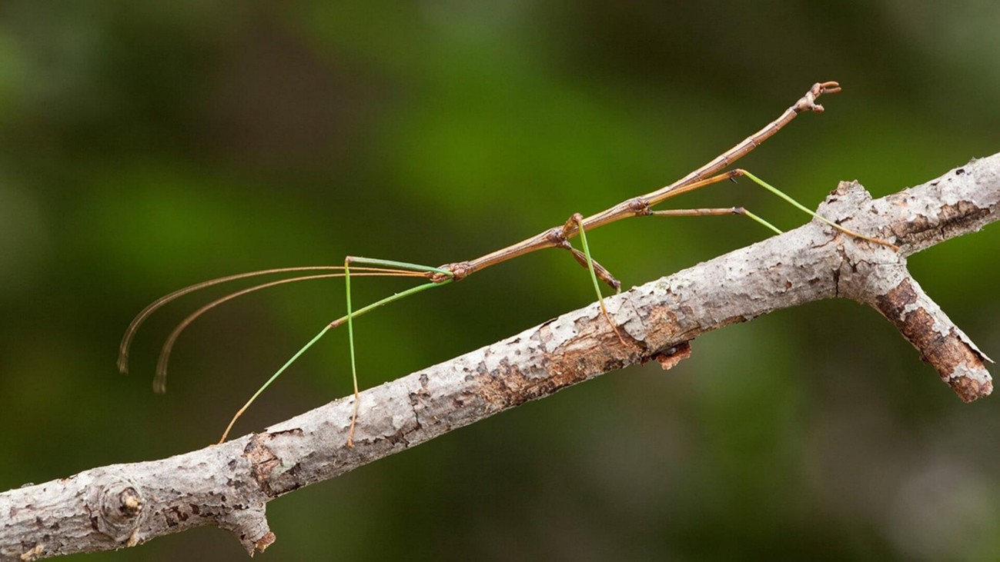

Казалось бы, что общего у палочника с покорителями орбит? Однако в 1980-х и 1990-х годах эти насекомые стали участниками космических биологических экспериментов. Их отправляли на орбиту для решения серьезных научных задач.

Понять, как условия космического полета — микрогравитация и космическая радиация — влияют на развитие живых организмов. Палочник вида Carausius morosus (индийский палочник) для этой роли подходил идеально. Он считается классической моделью в биологии развития, а его крупные яйца (размером около 1,8 на 2,7 мм) позволяют ученым детально наблюдать за эмбриогенезом.
Проводились в рамках миссий «Spacelab-D1» (1985) и советского спутника «Космос-1887». Позже исследования продолжились на биоспутниках серии «Бион».
Ученые отбирали яйца палочников на пяти разных стадиях развития — от только что отложенных до почти готовых к вылуплению. Затем эти яйца отправляли в космос, где часть из них находилась в условиях микрогравитации, а часть — на специальной центрифуге, создающей искусственную гравитацию, чтобы отделить эффекты невесомости от эффектов радиации. Полет длился от 7 до 13 дней.
Результаты оказались тревожными. Вопреки ожиданиям, основным негативным фактором оказалась именно невесомость, а не космическая радиация. Влияние тяжелых заряженных частиц было относительно низким.
Выяснилось, что яйца палочников особенно уязвимы на промежуточных стадиях развития (примерно с 16-го по 36-й день эмбриогенеза). Если яйцо на этой стадии попадало в условия микрогравитации, процент вылупившихся личинок резко падал — с обычных 80% до 36–56%.
Ученые обнаружили, что невесомость и радиация могут действовать вместе, усиливая негативное влияние друг друга. Даже у тех личинок, которым удавалось вылупиться, часто наблюдались различные телесные аномалии: деформации брюшных сегментов, конечностей или усиков.
Эксперименты с палочниками стали важным вкладом в космическую биологию. Они показали, что гравитация — это фактор, необходимый для нормального развития многих живых существ. Эти данные помогают ученым оценивать риски для будущих длительных космических полетов, в том числе для размножения живых организмов в условиях невесомости.